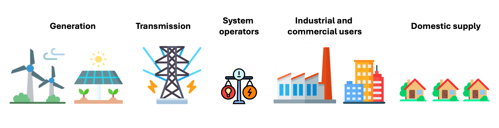

Electricity Markets#
Electricity markets are multifaceted and dynamic systems that are critical for balancing the supply and demand of electricity in real time [Bun04]. Over the past few decades, these markets have undergone significant transformations, evolving from vertically integrated monopolies to competitive environments. This evolution has introduced new challenges, such as managing the diverse interests of stakeholders, addressing the complex interactions between economic and physical systems, and adapting to the fluctuating nature of energy production and consumption [KS18].
The electricity market is typically divided into two main segments: wholesale and retail. Wholesale markets deal with bulk transactions between generators and suppliers, while retail markets cater to end consumers. These markets are intricately linked to the national grid and subject to regulatory frameworks, all of which contribute to their complexity.
Key Actors#
The electricity market ecosystem involves various key participants, each playing a critical role in ensuring the smooth operation of electricity generation, transmission, and consumption. The primary actors include:
Generators: entities responsible for producing electricity. This can be done through various energy sources such as fossil fuels, nuclear power, and renewable sources like wind, solar, and biomass.
Transmission operators: these operators manage the high-voltage transmission networks, ensuring the efficient long-distance transport of electricity. They are responsible for the stability and reliability of the grid infrastructure.
System operators: these entities are responsible for overseeing the real-time operation of the electricity grid. They balance supply and demand, manage system stability, and ensure that the electricity network operates smoothly across various regions. They also facilitate the integration of renewable energy sources and manage ancillary services to maintain grid reliability.
Retailers: energy suppliers that purchase electricity from the wholesale market and sell it to end consumers. Retailers are also responsible for billing, customer service, and regulatory compliance.
Consumers: end-users of electricity, ranging from households to large industrial facilities. Consumer demand is a key factor in determining the pricing and operational strategies in the market.

{kind=link}
Key Concepts and Challenges#
The transition from monopolies to competitive markets introduced a multitude of questions and challenges. Indeed, in modern electricity markets, multiple actors with divergent or competing interests interact within the market [KS18]. Moreover, in recent years, the increasing integration of renewable energy sources has led to greater variability and uncertainty in the supply [MCM+13]. Some of the primary challenges and processes in electricity markets are:
Market clearing and pricing: the market clearing process balances supply and demand through an auction mechanism, determining electricity prices and traded quantities. Relevant factors influencing this process include generator bidding strategies, fuel costs, demand variability, transmission constraints, and regulatory policies.
Day-ahead and real-time markets: these markets schedule and balance electricity supply and demand, with day-ahead markets setting the plan for the following day and real-time markets adjusting for deviations. Key aspects influencing these markets include demand forecasting accuracy, supply volatility, generator availability, weather conditions, and unexpected outages.
Balancing and ancillary services: markets provide balancing services to compensate for supply-demand mismatches and ensure grid stability. Important factors in these services include frequency regulation, voltage control, spinning reserves, black start capabilities, system inertia, load variability, and generator performance.
General integration challenges: the integration of diverse energy sources, including renewables, requires advanced forecasting and flexible market mechanisms to ensure reliable electricity supply. Influencing factors include the need for backup generation, energy storage, demand response strategies, grid infrastructure, market design, policy and regulatory frameworks, technological advancements, and economic incentives.
Role of Causality#
Practitioners in electricity markets are increasingly interested in understanding the underlying mechanisms driving market behaviours, rather than merely focusing on predictive models. Causality provides a framework to explore these mechanisms, enabling a more profound comprehension of how different factors influence market outcomes. This is essential for developing innovative solutions tailored to the unique characteristics of different markets and regions. Causality might help practitioners to:
Identify root causes: by understanding the causal relationships, practitioners can pinpoint the root causes of market phenomena, such as price spikes or grid instability.
Improve decision-making: causal insights enable more informed decision-making, from market design to operational strategies. For example, identifying the factors that cause congestion in the transmission network can lead to better investment and management decisions.
Design effective interventions: understanding causality helps in designing interventions that address the root causes rather than just the symptoms, leading to more sustainable and effective solutions.
Enhance forecasting and planning: causality allows for the development of more robust forecasting models that consider the underlying drivers of supply and demand variability.
Conclusion#
The complexities of electricity markets, amplified by the integration of renewable energy, necessitate a deeper understanding of the underlying causal mechanisms. By leveraging causal analysis and insights, practitioners can better navigate these complexities, leading to improved market performance and grid reliability.